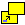
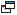

The {{domxref("Window")}} interface's open() method loads
the specified resource into the new or existing browsing context (window,
{{HTMLElement("iframe")}} or tab) with the specified name. If the name doesn't exist,
then a new browsing context is opened in a new tab or a new window, and the specified
resource is loaded into it.
Note that for brevity, this document will generally use the term "window" as a shorthand for "a browsing context in a tab or window".
var window = window.open(url, windowName, [windowFeatures]);
urlurl,
a blank page is opened into the targeted browsing context.windowName {{optional_inline}}windowName.target attribute of
{{HTMLElement("a", "", "#attr-target")}} or {{HTMLElement("form", "",
"#attr-target")}} elements. The name should not contain whitespace. Keep in mind that
this will NOT be used as the window's title.
windowFeatures {{optional_inline}}A WindowProxy object, which is basically a thin wrapper for the
{{domxref("Window")}} object representing the newly created window, and has all its
features available. If the window couldn't be opened, the returned value is instead
null. The returned reference can be used to access properties and methods
of the new window as long as it complies with Same-origin policy security
requirements.
The open() method creates a new secondary browser window, similar to
choosing New Window from the File menu. The url parameter
specifies the URL to be fetched and loaded in the new window. If
url is an empty string, then a new blank, empty window (URL
about:blank) is created with the default toolbars of the main window.
Note that remote URLs won't load immediately. When window.open() returns,
the window always contains about:blank. The actual fetching of the URL is
deferred and starts after the current script block finishes executing. The window
creation and the loading of the referenced resource are done asynchronously.
var windowObjectReference;
var windowFeatures = "menubar=yes,location=yes,resizable=yes,scrollbars=yes,status=yes";
function openRequestedPopup() {
windowObjectReference = window.open("http://www.cnn.com/", "CNN_WindowName", windowFeatures);
}
var windowObjectReference;
function openRequestedPopup() {
windowObjectReference = window.open(
"http://www.domainname.ext/path/ImageFile.png",
"DescriptiveWindowName",
"resizable,scrollbars,status"
);
}
If a window with the name already exists, then url is loaded
into the existing window. In this case the return value of the method is the
existing window and windowFeatures is ignored. Providing an
empty string for url is a way to get a reference to an open
window by its name without changing the window's location. Otherwise the call to
window.open() will just create a new window.
To open a new window on every call of window.open(), use the
special value _blank for windowName.
Note on the use of window.open() to
reopen an existing window with name windowName : This
functionality is not valid for all browsers and more with variable conditions.
Firefox (50.0.1) functions as described: from the same domain+port reopen with same
name will access the previously created window. Google Chrome (55.0.2883.87 m )
on the other hand will do it only from the same parent (as if the window was created
dependent, which is the "opener"). This is a wide limitation and generates
unbelievable complexity of development. Firefox (51.) gets the handle but cannot run
any Element.focus() while Chrome can run focus() from opener
to child but not between siblings nor, reverse, from child to opener. This function is
the lonely key to get back the handle on a window if the developer has access only to
its name (the name can be saved with cookies or local storage but not the window
object handle). For now 10/01/2017 the differencies of behavior found recently have
not still been tested for others Browsers.
windowFeatures is an optional string containing a
comma-separated list of requested features of the new window. After a window is opened,
JavaScript can't be used to change the features. If windowName
does not specify an existing window and the windowFeatures
parameter is not provided (or if the windowFeatures parameter is
an empty string), then the new secondary window will render the default toolbars of the
main window.
Tip: Note that in some browsers, users can override the
windowFeatures settings and enable (or prevent the disabling
of) features. Further, control of some window features is available only on some browsers
and platforms (See popup condition section)
windowFeatures parameter can specify the position and size of
the new window.
Note on position and dimension error correction
If only one of them is specified, the behavior is implementation-dependent, and web author should not rely on it.
left or screenXtop or screenYIf the windowFeatures parameter is non-empty and if no position
features are defined, then the left and top coordinates of the new window dimension will
be 22 pixels from where the most recently rendered window was. An offset is universally
implemented by browser manufacturers (it is 29 pixels in IE6 SP2 with the default theme)
and its purpose is to help users to notice new windows opening. If the most recently
used window was maximized, then there is no offset: the new window will be maximized as
well.
If only one of them is specified, the behavior is implementation-dependent, and web author should not rely on it.
width or innerWidthheight or innerHeightIf the windowFeatures parameter is non-empty and no size
features are defined, then the new window dimensions will be the same as the dimensions
of the most recently rendered window.
Do not use them.
outerWidth {{deprecated_inline}} (only on Firefox, obsolete from Firefox 80)outerWidth value includes the window vertical scrollbar (if present) and
left and right window resizing borders.outerHeight {{deprecated_inline}} (only on Firefox, obsolete from Firefox 80)outerHeight value includes any/all present toolbar, window horizontal
scrollbar (if present) and top and bottom window resizing borders. Minimal required
value is 100.In modern browsers (Firefox 76 or newer, Google Chrome, Safari, Chromium Edge), the following features are just a condition for whether to open popup or not. See popup condition section.
The following features control the visibility of each UI parts, All features can be set
to yes or 1, or just be present to be on. Set them to
no or 0, or in most cases just omit them, to be off.
Example: status=yes, status=1, and status have
identical results.
menubarwindowFeatures is non-empty, menubar defaults
to off.
toolbarwindowFeatures is non-empty, toolbar defaults
to off.
locationwindowFeatures is non-empty, location defaults
to off.
statuswindowFeatures is non-empty, status defaults
to off.
resizablewindowFeatures is non-empty, resizable
defaults to on.
Tip: For accessibility reasons, it is strongly recommended to set this feature always on
scrollbarswindowFeatures is non-empty, scrollbars
defaults to off.Tip: For accessibility reasons, it is strongly encouraged to set this feature always on
noopenernull). In addition, the window.open() call will
also return null, so the originating window will not have access to the
new one either. This is useful for preventing untrusted sites opened via
window.open() from tampering with the originating window, and vice versa.
noopener is used, nonempty target names other than
_top, _self, and _parent are all treated like
_blank in terms of deciding whether to open a new window/tab.rel="noopener" for
more information and for browser compatibility details, including information about
ancillary effects.
noreferrerreferrer set to
noreferrer; this prevents the request from sending the URL of the page
that initiated the request to the server where the request is sent. In addition,
setting this feature also automatically sets
noopener. See
rel="noreferrer"
for additional details and compatibility information. Firefox introduced support for
noreferrer in Firefox 68.<script type="text/javascript">
var windowObjectReference = null; // global variable
function openFFPromotionPopup() {
if(windowObjectReference == null || windowObjectReference.closed)
/* if the pointer to the window object in memory does not exist
or if such pointer exists but the window was closed */
{
windowObjectReference = window.open("http://www.spreadfirefox.com/",
"PromoteFirefoxWindowName", "resizable,scrollbars,status");
/* then create it. The new window will be created and
will be brought on top of any other window. */
}
else
{
windowObjectReference.focus();
/* else the window reference must exist and the window
is not closed; therefore, we can bring it back on top of any other
window with the focus() method. There would be no need to re-create
the window or to reload the referenced resource. */
};
}
</script>
(...)
<p><a
href="http://www.spreadfirefox.com/"
target="PromoteFirefoxWindowName"
onclick="openFFPromotionPopup(); return false;"
title="This link will create a new window or will re-use an already opened one"
>Promote Firefox adoption</a></p>
The above code solves a few usability problems related to links opening secondary
window. The purpose of the return false in the code is to cancel default
action of the link: if the onclick event handler is executed, then there is no need to
execute the default action of the link. But if javascript support is disabled or
non-existent on the user's browser, then the onclick event handler is ignored and the
browser loads the referenced resource in the target frame or window that has the name
"PromoteFirefoxWindowName". If no frame nor window has the name
"PromoteFirefoxWindowName", then the browser will create a new window and will name it
"PromoteFirefoxWindowName".
More reading on the use of the target attribute:
HTML 4.01 Target attribute specifications
How do I create a link that opens a new window?
You can also parameterize the function to make it versatile, functional in more situations, therefore re-usable in scripts and webpages:
<script type="text/javascript">
var windowObjectReference = null; // global variable
function openRequestedPopup(url, windowName) {
if(windowObjectReference == null || windowObjectReference.closed) {
windowObjectReference = window.open(url, windowName,
"resizable,scrollbars,status");
} else {
windowObjectReference.focus();
};
}
</script>
(...)
<p><a
href="http://www.spreadfirefox.com/"
target="PromoteFirefoxWindow"
onclick="openRequestedPopup(this.href, this.target); return false;"
title="This link will create a new window or will re-use an already opened one"
>Promote Firefox adoption</a></p>
You can also make such function able to open only 1 secondary window and to reuse such single secondary window for other links in this manner:
<script type="text/javascript">
var windowObjectReference = null; // global variable
var PreviousUrl; /* global variable that will store the
url currently in the secondary window */
function openRequestedSinglePopup(url) {
if(windowObjectReference == null || windowObjectReference.closed) {
windowObjectReference = window.open(url, "SingleSecondaryWindowName",
"resizable,scrollbars,status");
} else if(PreviousUrl != url) {
windowObjectReference = window.open(url, "SingleSecondaryWindowName",
"resizable=yes,scrollbars=yes,status=yes");
/* if the resource to load is different,
then we load it in the already opened secondary window and then
we bring such window back on top/in front of its parent window. */
windowObjectReference.focus();
} else {
windowObjectReference.focus();
};
PreviousUrl = url;
/* explanation: we store the current url in order to compare url
in the event of another call of this function. */
}
</script>
(...)
<p><a
href="http://www.spreadfirefox.com/"
target="SingleSecondaryWindowName"
onclick="openRequestedSinglePopup(this.href); return false;"
title="This link will create a new window or will re-use an already opened one"
>Promote Firefox adoption</a></p>
<p><a
href="https://www.mozilla.org/support/firefox/faq"
target="SingleSecondaryWindowName"
onclick="openRequestedSinglePopup(this.href); return false;"
title="This link will create a new window or will re-use an already opened one"
>Firefox FAQ</a></p>
"Scripts may not close windows that were not opened by script." Otherwise
the history of URLs visited during the browser session would be lost.about:config. Since your users are the ones who are
supposed to use such windows (and not you, being the web author), the best is to avoid
interfering with their habits and preferences. We recommend to always set the
resizability and scrollbars presence (if needed) to yes to insure accessibility to
content and usability of windows. This is in the best interests of both the web author
and the users.dom.disable_window_move_resize to true in
about:config or by editing accordingly their user.js file.window.open(): it will be null if the window wasn't allowed
to open. However, for most other popup blockers, there is no reliable way.window.open() method gives a main window a reference to a secondary
window; the opener property gives a
secondary window a reference to its main window.Generally speaking, it is preferable to avoid resorting to window.open()
for several reasons:
If you want to offer to open a link in a new window, then follow tested and recommendable usability and accessibility guidelines:
"javascript:" links break accessibility and usability of webpages in every browser.
Further reading:
<a href="#" onclick="window.open(...);">Such pseudo-link also breaks accessibility of links. Always use a real URL for the href attribute value so that if javascript support is disabled or inexistent or if the user agent does not support opening of secondary window (like MS-Web TV, text browsers, etc), then such user agents will still be able to load the referenced resource according to its default mode of opening/handling a referenced resource. This form of code also interferes with advanced features in tab-capable browsers: eg. middle-click on links, Ctrl+click on links, Ctrl+Enter on links, "mouse gestures" features.
Identify links that will open new windows in a way that helps navigation for users by coding the title attribute of the link, by adding an icon at the end of the link or by coding the cursor accordingly.
The purpose is to warn users in advance of context changes to minimize confusion on the user's part: changing the current window or popping up new windows can be very disorienting to users (Back toolbar button is disabled).
"Users often don't notice that a new window has opened, especially if they are using a small monitor where the windows are maximized to fill up the screen. So a user who tries to return to the origin will be confused by a grayed out Back button."
quote from The Top Ten New Mistakes of Web Design: 2. Opening New Browser Windows, Jakob Nielsen, May 1999
When extreme changes in context are explicitly identified before they occur, then the users can determine if they wish to proceed or so they can be prepared for the change: not only they will not be confused or feel disoriented, but more experienced users can better decide how to open such links (in a new window or not, in the same window, in a new tab or not, in "background" or not).
References
| Example "New Window" Icons & Cursors | |||
|  | |||
|  | |
||
If javascript support is disabled or non-existent, then the user agent will create a secondary window accordingly or will render the referenced resource according to its handling of the target attribute: e.g. some user agents that cannot create new windows, like MS Web TV, will fetch the referenced resource and append it at the end of the current document. The goal and the idea is to try to provide - not impose - to the user a way to open the referenced resource, a mode of opening the link. Your code should not interfere with the features of the browser at the disposal of the user and your code should not interfere with the final decision resting with the user.
target="_blank"Always provide a meaningful name to your target attribute and try to reuse such target attribute in your page so that a click on another link may load the referenced resource in an already created and rendered window (therefore speeding up the process for the user) and therefore justifying the reason (and user system resources, time spent) for creating a secondary window in the first place. Using a single target attribute value and reusing it in links is much more user resources friendly as it only creates one single secondary window, which is recycled. On the other hand, using "_blank" as the target attribute value will create several new and unnamed windows on the user's desktop that cannot be recycled, reused. In any case, if your code is well done, it should not interfere with the user's final choice but rather merely offer them more choices, more ways to open links and more power to the tool they are using (a browser).
| Specification | Status | Comment |
|---|---|---|
| {{SpecName('HTML WHATWG', 'window-object.html#dom-open', 'Window.open()')}} | {{Spec2('HTML WHATWG')}} | |
| {{ SpecName('CSSOM View', '#the-features-argument-to-the-open()-method', 'The features argument to the open() method') }} | {{ Spec2('CSSOM View') }} | Defines the effect of the features argument |
{{Compat}}
Most modern browsers (listed below) don't allow web content to control the visibility of UI parts separately.
UI-related items of windowFeatures are used as a condition to
whether opening a popup or a new tab, or a new window, and UI parts visibility of each
of them is fixed.
The condition is implementation-dependent and not guaranteed to be stable.
When content overflows window viewport dimensions, then scrollbar(s) (or some scrolling mechanism) are necessary to ensure that content can be accessed by users. Content can overflow window dimensions for several reasons that are outside the control of web authors:
Requested position and requested dimension values in the features list will not be honored and will be corrected if any of such requested value does not allow the entire browser window to be rendered within the work area for applications of the user's operating system. No part of the new window can be initially positioned offscreen. This is by default in all Mozilla-based browser releases.
MSIE 6 SP2 has a similar error correction mechanism but it is not activated by default in all security levels: a security setting can disable such error correction mechanism.